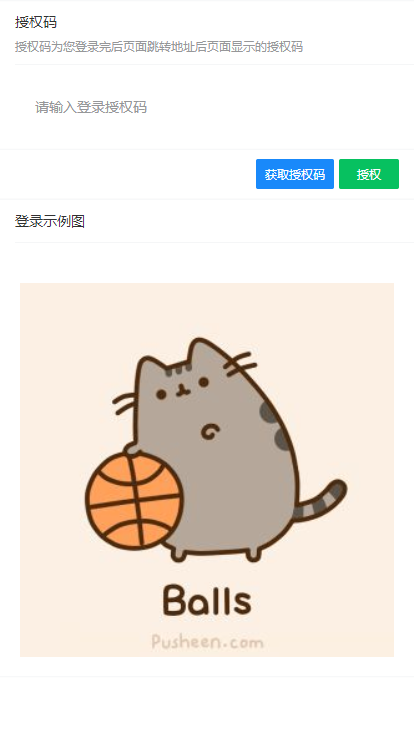

最近我们公司用vue搞事情，我们就用了Node和Vue写了个博客园的移动端WebApp，想拿出来与大家分享下，也谈谈我遇到的坑。由于时间问题，目前还剩“闪存”，“博问”这两块还没做完。先分享下截图吧。
我呢，就从技术，部署，以及遇到的坑来讲吧，当然啦,首先要感谢博客园官方提供接口，以及客服人员对于我的“邮箱轰炸”，还回复我的问题。致以大大的感谢。
技术就是这么简单，开发工具就不讲了，前端采用脚手架构建而成，就不用自己累死累活去配置，这个时代真好。然后再使用vant的UI框架构建样式界面，webpack打包嘛，less专注样式咯，后端就完全是博客园的api了，拿来即用，不过接口要申请下权限。前后端的请求，我采用的是“axios”,使用它的拦截器做了不少事。然后部署的话，我呢，就生成静态了，然后用nginx部署在阿里云服务器上了。
技术想讲的就这些，vue是基础，若是vue不懂，可以去我之前的文章看看，不过呢，我更建议去官方文档上去学习，其他的也是，我只是比较喜欢写写文章。由这些技术，我就构建了一个webapp。
token问题
博客园的接口采用的是OAuth2的形式，所以授权玩会附带一个token给我们，那遇到的token是啥问题呢，我们都知道token是
时效性的，所以一般来说拿到就要保存下来，保存没问题，可以保存到cookie来，但是你再次访问，怎么知道token过期呢，还有进行重新获取呢。
为啥说这个是大坑呢，因为以前都是jQuery的ajax，没有用过axios，不知道拦截器这种东西，我们使用拦截器，进行拦截"401"的转态码，因为它代表着未授权，拦截到后我们重新请求token，保存，并重新请求刚才的http。附上代码。
跨域问题
对于博客园的接口地址，我们属于不同域的情况，可能你用POSTMAN来进行接口调试的情况，可以正常获取到数据，但实际在项目内我们却会遇到跨域问题。这也是很多作为前后端分离项目，优先考虑的问题。在这分为开发环境以及线上环境，线上环境会在下面讲到，我们先讲下开发环境底下的跨域问题。
因为开发环境是在Node.js底下嘛，所以我采用的是webpack的跨域插件"http-proxy-middleware"来进行跨域的，因为vue-cli3.0，它集成在"vue.config.js"底下,配置如下：
具体作用嘛，大家看官方文档咯，https://webpack.docschina.org/configuration/dev-server/#devserver-proxy
登录问题
接下来就是登录问题，刚才我们讲过了博客园是采用OAuth2的授权，这边博客园还分为两种。不涉及用户操作的授权采用的是"授权码模式"，而有关用户操作的授权采用的是"密码模式",两者区分大家可以看这篇文章。那意味着我们在WebApp管理两个token。管理两个token不是大坑，无非就是两个token嘛，大坑指的是我们获取用户操作的token是需要先用户进行登录操作，然后回调一个授权码的。我们来分析下。
从上图的接口描述我们可以得知，我们要先或许授权码code，但是code是有回调地址redirect_uri参数传过来的，这边是默认博客园的地址的，安卓或者ios的开发，可以根据webView的监听来获取，但是Web这边就存在跨域的问题了，我尝试了很多方式，有iframe等等，但是最根本的问题，页面在人家手上，你碰不着，这也就是大坑了，然后我就联系管理员，官方把回调地址改成我这边设置好的域名。真的很感谢管理员及其博客园的开发。
但在这之前，我就想着说，如果改不成，那就换成引导式的方法来引导用户进行自己讲授权码复制回来，然后粘贴到我们设置到的授权页面，也就有下图的界面，所以即使回调地址不是咱们这边的，也可以进行登录授权。可以点击"获取授权码"来跳转页面，获取授权码，然后回到这个页面登录。

图片防盗链
最后剩下一个坑，也就是图片防盗链吧，正常博客园的博问内容有些地址是image.cnblogs的地址，所以我们附在了我们自己的域名底下就会出现防盗链的结果，那如何处理防盗链呢，这边有2种做法，第一种是在head加上<meta name="referrer" content="no-referrer">来标识，第一种是使用vue的过滤器，然后用第三方代理去请求图片。这样子就可以了，不过代理的地址是cdn，所以可能找不到图片。
总结下吧
整体来说，整个项目挺好做的，思路也很清晰，唯一就是跨域问题比较有点，但最终也是解决了。还不错吧。
在前面说到，我部署是使用云服务器+nginx，至于怎么安装nginx不懂可以私信我，或者百度嘛，我这边分享下我nginx的配置节点就可以了。当然如果还想要部署在外网环境，可以的话云服务器来一台，或者做个内网穿透，frp，ngrok之类的就可以，废话不多说，附上节点代码：
我们可以看到配置节点有"proxy_pass"这个就是nginx做的反向代理了，可以解决掉跨域问题。
我平时喜欢逛逛博客园的文章，但是移动端直接访问网页没有适配，手机端还是需要下载软件，所以我就想着做个webapp版的，想要嵌入Android，ios也可以，挂在公众号也可以，直接访问也可以，爱咋咋地。然后发现了api，又最近在练手vue，所以就做了一个出来，但是内容还没完善，后面可以会完善起来，大家要是有在移动端设备看博客的习惯，可以收藏网址一波，或者大家进去捧捧场咯。最后附上源码地址，网站地址，还有网站二维码，以便手机扫嘛。
1.源码地址：https://github.com/xhl592576605/cnblog_vue
2.网站地址：http://cnblog.xuhuale.cn(建议使用移动端的模式访问，观感更加)
3.二维码: